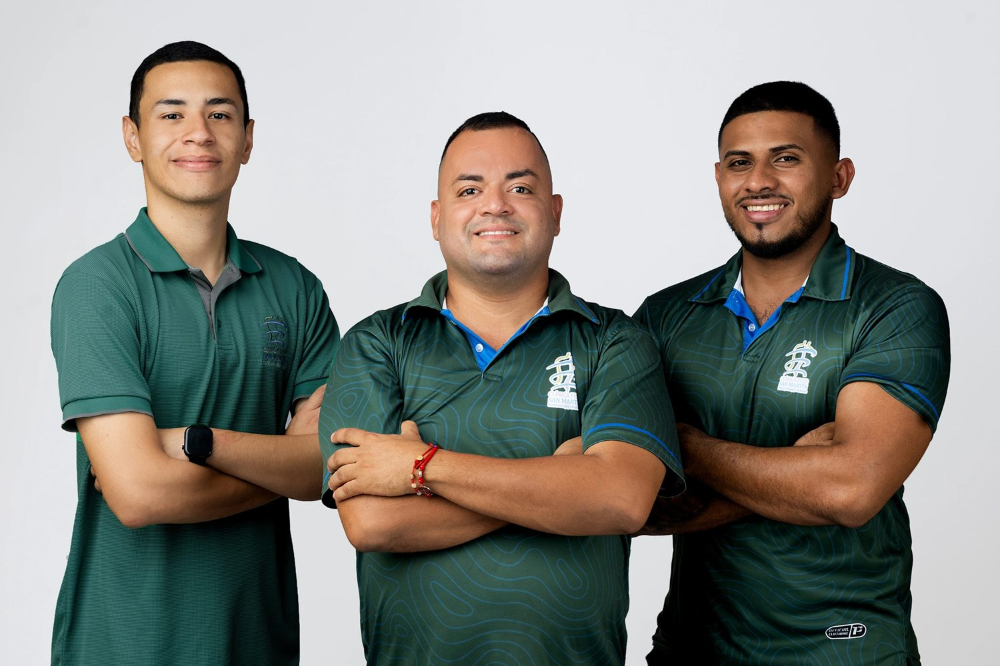

Valoración y diagnóstico
Todo empieza por saber qué te pasa. Valoramos tu caso para llegar a un diagnóstico preciso antes de tratar.
Fisioterapia en Liberia, Guanacaste
Somos Clínica Fisio San Martín. Diagnósticos y tratamientos precisos para mejorar tu calidad de vida y tu rendimiento.

Servicios
Un mismo proceso para cada paciente: entender qué pasa, tratarlo con precisión y devolverte la movilidad que necesitás.
Todo empieza por saber qué te pasa. Valoramos tu caso para llegar a un diagnóstico preciso antes de tratar.
Tratamientos precisos, guiados por el diagnóstico y ajustados a tu proceso de recuperación.
El objetivo no es solo que dejes de sentir dolor: es que te muevas mejor y rindas más en tu día a día.
Nuestro equipo
Un equipo de fisioterapeutas que acompaña cada proceso de principio a fin.
Director General y Fisioterapeuta
Fisioterapeuta
Fisioterapeuta
Ubicación
Estamos en Barrio Moracia, a 50 metros al norte de la Iglesia Hosanna.
Dirección
50 metros al norte de la Iglesia Hosanna, Barrio Moracia, Liberia, Guanacaste.
Horario